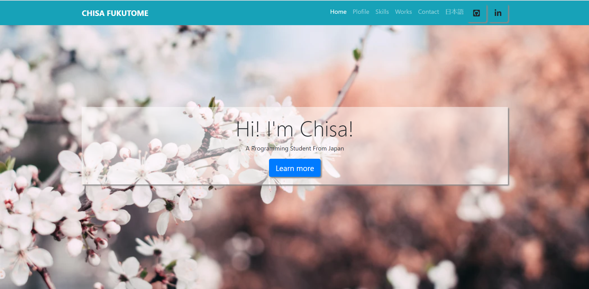

作品
GitHubページからも、私のプロジェクトの閲覧が可能です。

ポートフォリオウェブサイト
プロフィール、スキル、プログラミングプロジェクト、問い合わせフォームなどを含むChisaのポートフォリオページ。 英語だけでなく、日本語バージョンもあり。
言語: HTML, CSS, Bootstrap
制作期間: 10/22/2020 - 現在

バンキングアプリケーション
顧客として、お金の引き出し、預け入れ、送金機能のある振込銀行アプリ。 管理者として、顧客情報の閲覧、編集なども可能。 さらに、顧客と銀行とのやり取りもこのアプリで可能。.
言語: Java
制作期間: 11/01/2020 - 現在

プロジェクト名
編集中...
言語: ...
制作期間: ...